运输层协议为运行在不同主机上的应用进程之间提供了逻辑通信( logic communica-tion)功能。应用进程使用运输层提供的逻辑通信功能彼此发送报文，而无须考虑承载这些报文的物理基础设施的细节。
运输层协议是在端系统中而不是在路由器中实现的。
网络应用程序可以使用多种的运输层协议。例如，因特网有两种协议，即TCP和UDP。每种协议都能为调用的应用程序提供一组不同的运输层服务。
在协议栈中，运输层刚好位于网络层之上。网络层提供了主机之间的逻辑通信，而运输层为运行在不同主机上的进程之间提供了逻辑通信。
运输层协议只工作在端系统中。在端系统中,运输层协议将来自应用进程的报文移动到网络边缘（即网络层)，反过来也是一样，但对有关这些报文在网络核心如何移动并不作任何规定。中间路由器既不处理也不识别运输层加在应用层报文的任何信息。
计算机网络中可以安排多种运输层协议，每种协议为应用程序提供不同的服务模型。
运输协议能够提供的服务常常受制于底层网络层协议的服务模型。如果网络层协议无法为主机之间发送的运输层报文段提供时延或带宽保证的话，运输层协议也就无法为进程之间发送的应用程序报文提供时延或带宽保证。
然而，即使底层网络协议不能在网络层提供相应的服务，运输层协议也能提供某些服务。例如，即使底层网络协议是不可靠的，运输协议也能为应用程序提供可靠的数据传输服务。另一个例子是，即使网络层不能保证运输层报文段的机密性，运输协议也能使用加密来确保应用程序报文不被入侵者读取。
两种运输层协议
一种是UDP（用户数据报协议)，它为调用它的应用程序提供了一种不可靠、无连接的服务。
另一种是TCP（传输控制协议)，它为调用它的应用程序提供了一种可靠的、面向连接的服务。
运输层分组一般称为报文段
因特网IP服务模型
因特网网络层协议有一个名字叫IP，即网际协议。IP为主机之间提供了逻辑通信。
IP的服务模型是尽力而为交付服务（ best- effort delivery serv-ice)。它不确保报文段的交付，不保证报文段的按序交付，不保证报文段中数据的完整性。IP被称为不可靠服务（ unreliable service)。
每台主机至少有一个网络层地址，即所谓的IP地址。
TCP和UDP服务模型
UDP和TCP最基本的责任是，将两个端系统间IP的交付服务扩展为运行在端系统上的两个进程之间的交付服务。将主机间交付扩展到进程间交付被称为运输层的多路复用与多路分解。
UDP和TCP还可以通过在其报文段首部中包括差错检查字段而提供完整性检查。进程到进程的数据交付和差错检查是两种最低限度的运输层服务，也是UDP所能提供的仅有的两种服务。所以，UDP不能保证数据能够完整无缺地到达目的进程。
此外，TCP还提供可靠数据传输。通过使用流量控制、序号、确认和定时器，TCP确保正确地、按序地将数据交付给接收进程。
TCP还提供拥塞控制（ congestion control)。TCP拥塞控制防止任何一条TCP连接用过多流量来淹没通信主机之间的链路和交换设备。这可以通过调节TCP连接的发送端发送进网络的流量速率来做到。
一个进程有一个或多个套接字，它相当于传递数据的门户。在接收主机中的运输层实际上并没有直接将数据交付给进程，而是将数据交给了一个中间的套接字。每个套接字都有唯一的标识符。标识符的格式取决于它是UDP还是TCP套接字
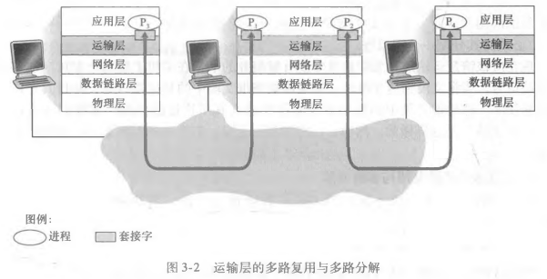
将运输层报文段中的数据交付到正确的套接字的工作称为多路分解（ demultiplexing)。
在源主机从不同套接字中收集数据块，并为每个数据块封装上首部信息（这将在以后用于分解）从而生成报文段，然后将报文段传递到网络层，所有这些工作称为多路复用( multiplexing)。
报文段数据格式
运输层多路复用要求:①套接字有唯一标识符;②每个报文段有特殊字段来指示该报文段所要交付到的套接字。
特殊字段是源端口号字段和目的端口号字段。
端口号是一个16比特的数，其大小在0~65535之间。0 ~1023范围的端口号称为周知端口号，是受限制的。当我们开发一个新的应用程序时必须为其分配一个端口号。
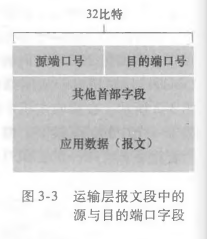
运输层分解服务:在主机上的每个套接字能够分配一个端口号，当报文段到达主机时，运输层检查报文段中的目的端口号，并将其定向到相应的套接字。然后报文段中的数据通过套接字进入其所连接的进程。
一个UDP套接字是由一个二元组全面标识的，该二元组包含一个目的IP地址和一个目的端口号。因此、如果两个UDP报文段有不同的源IP地址和/或源端口号，但具有相同的目的IP地址和目的端口号，那么这两个报文段将通过相同的目的套接字被定向到相同的目的进程。
源端口号的用途是什么呢?在A 到B的报文段中，源端口号用作“返回地址”的一部分，即当B需要回发一个报文段给A时,B到A 的报文段中的目的端口号便从A到B的报文段中的源端口号中取值。
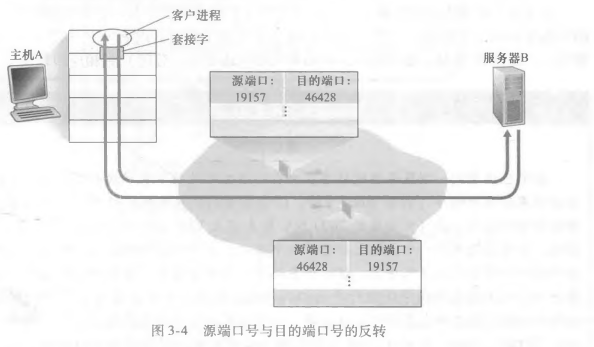
TCP套接字和UDP套接字之间的一个细微差别是，TCP套接字是由一个四元组（源IP地址，源端口号，目的P地址，目的端口号）来标识的。因此，当一个TCP报文段从网络到达一台主机时，该主机使用全部4个值来将报文段定向（分解）到相应的套接字。两个具有不同源IP地址或源端口号的到达TCP报文段将被定向到两个不同的套接字，除非TCP报文段携带了初始创建连接的请求。
注意TCP存在两种套接字，一种是欢迎套接字，是共用的，还有一种是连接套接字，每个不同的连接都会创建不同的套接字来传递数据。
服务器主机可以支持很多并行的TCP套接字，每个套接字与一个进程相联系，并由其四元组来标识每个套接字。当一个TCP报文段到达主机时，所有4个字段（源IP地址,源端口，目的IP地址，目的端口）被用来将报文段定向（分解）到相应的套接字。
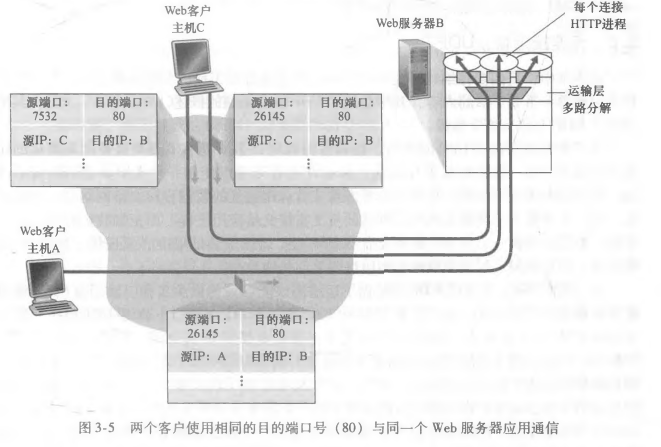
如果客户与服务器使用持续HTTP，则在整条连接持续期间，客户与服务器之间经由同一个服务器套接字交换HTTP报文。
如果客户与服务器使用非持续HTTP，则对每一对请求/响应都创建一个新的TCP连接并在随后关闭，因此对每―对请求/响应创建一个新的套接字并在随后关闭。这种套接字的频繁创建和关闭会严重地影响一个繁忙的Web服务器的性能。
UDP从应用进程得到数据，附加上用于多路复用/分解服务的源和目的端口号字段，以及两个其他的小字段, 然后将形成的报文段交给网络层。
网络层将该运输层报文段封装到一个IP数据报中，然后尽力而为地尝试将此报文段交付给接收主机。
一个最典型的应用例子便是DNS，如果查询主机的DNS程序没有收到响应，泽试图向另一个服务器发送查询，或者通知程序不能获得响应
应用程数据占用UDP报文段的数据字段。
UDP首部只有4个字段，每个字段由两个字节组成。
通过端口号可以使目的主机将应用数据交给运行在目的端系统中的相应进程（即执行分解功能)。
长度字段指示了在UDP报文段中的字节数（首部加数据)。因为数据字段的长度在一个UDP段中不同于在另一个段中，故需要一个明确的长度。
接收方使用检验和来检查在该报文段中是否出了差错。
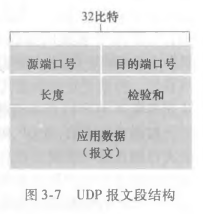
怎样求？
UDP检验和提供了差错检测功能。这就是说，检验和用于确定当UDP报文段从源到达目的地移动时，其中的比特是否发生了改变
发送方的UDP对报文段中的所有16比特字的和进行反码运算，求和时遇到的任何溢出都被回卷。得到的结果被放在UDP报文段中的检验和字段。
例子
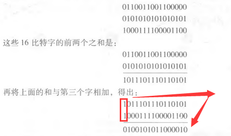
取反之后，如果和不为全1，那么一定出错了，但是如果全为一，也不一定就没有错，仍然可能出错。（同一位置上的相同个数的0和1同时出错）
为什么要求？
其原因之一是不能保证源和目的之间的所有链路都提供差错检测;这就是说，也许这些链路中的一条可能使用没有差错检测的协议。
此外，即使报文段经链路正确地传输，当报文段存储在某台路由器的内存中时，也可能引入比特差错。
在既无法确保逐链路的可靠性，又无法确保内存中的差错检测的情况下，如果端到端数据传输服务要提供差错检测，UDP就必须在端到端基础上在运输层提供差错检测。
不足
因为假定IP是可以运行在任何第二层协议之上的，运输层提供差错检测作为一种保险措施是非常有用的。
虽然UDP提供差错检测，但它对差错恢复无能为力。
UDP的某种实现只是丢弃受损的报文段;其他实现是将受损的报文段交给应用程序并给出警告。
为上层实体提供的服务抽象是:数据可以通过一条可靠的信道进行传输。借助于可靠信道，传输数据比特就不会受到损坏(由0变为1，或者相反）或丢失，而且所有数据都是按照其发送顺序进行交付。这恰好就是TCP向调用它的因特网应用所提供的服务模型。实现这种服务抽象是可靠数据传输协议( reliable data transfer protocol )的责任。
经完全可靠信道的可靠数据传输:rdt1.0
底层信道完全可靠，有限状态机FSM
引起变迁的事件显示在表示变迁的横线上方,事件发生时所采取的动作显示在横线下方。用A表示缺失。虚线表示初始状态。
rdt_send(data)事件是有较高层应用的过程调用产生的。
rdt_rcv(packet)事件是由较低层协议的过程调用产生的。
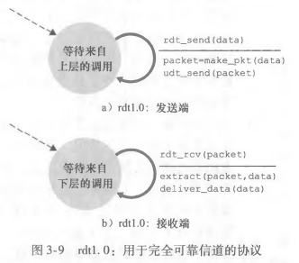
经具有比特差错信道的可靠数据传输:rdt2.0
特点：比特可能受损，但是分组仍然是按序、全部交付，不存在分组丢失
采用自动重传请求协议ARQ，auromatic repeat request
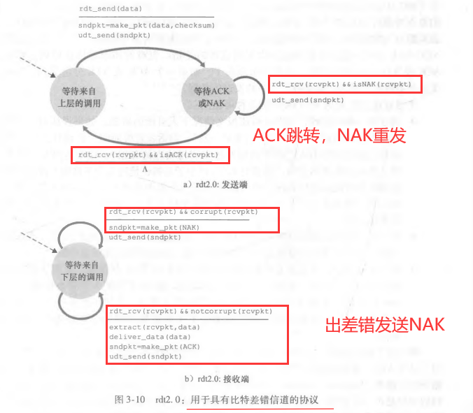
发送方将不会发送一块新数据，除非发送方确信接收方已正确接收当前分组。由于这种行为，rdt2.0这样的协议被称为停等( stop- and- wait)协议。
致命缺陷：如果一个ACK或NAK分组受损，发送方无法知道接收方是否正确接收了上一块发送的数据。
解决办法：
注意：需要在ACK和NAK中也增加差错检验，并且需要有下面的处理
在数据分组中添加一新字段，让发送方对其数据分组编号，即将发送数据分组的序号（ sequence number)放在该字段。于是，接收方只需要检查序号即可确定收到的分组是否一次重传。对于停等协议这种简单情况，1比特序号就足够了。
因为目前我们假定信道不丢分组，ACK和 NAK分组本身不需要指明它们要确认的分组序号。
也可以选择在ACK中加入编号，这样就可以用ACK代替NAK，发送方接收到同一个分组的两个ACK，就知道出错了
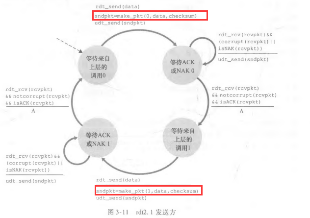
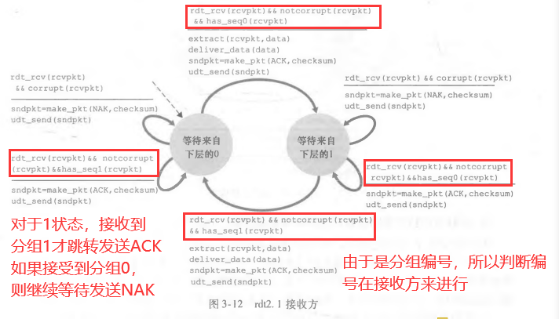
经具有比特差错的丢包信道的可靠数据传输:rdt3.0
特点：除了比特受损，还可能丢包
加一个定时器（时间至少大于发送方与接收方的一个往返时延和接收方处理一个分组的时间），超时发送方未收到回复ACK，就重发分组
存在冗余数据分组。
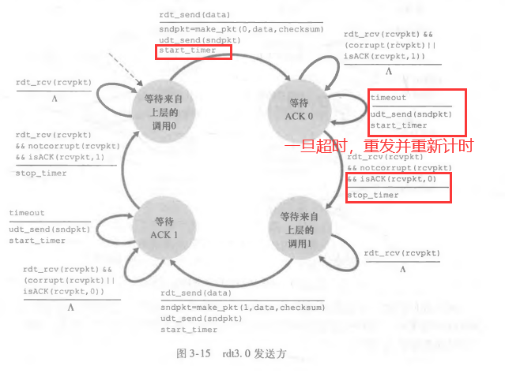
停等协议的性能估计
定义发送方（或信道）的利用率（ utilization)为:发送方实际忙于将发送比特送进信道的那部分时间与发送时间之比。
对于链路传输速率很大的链路，停等协议利用率很低，存在RTT
引入流水线
这种特殊的性能问题的一个简单解决方法是:不以停等方式运行，允许发送方发送多个分组而无须等待确认，如果发送方可以在等待确认之前发送3个报文，其利用率也基本上提高3倍。
因为许多从发送方向接收方输送的分组可以被看成是填充到一条流水线中，故这种技术被称为流水线（ pipelining)。
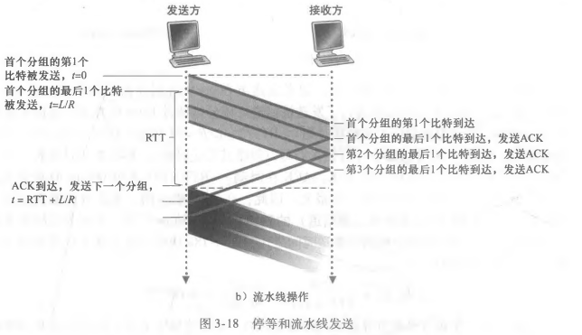
为实现流水线，需要做什么？
必须增加序号范围，因为每个输送中的分组（不计算重传的）必须有一个唯一的序号，而且也许有多个在输送中的未确认报文。
协议的发送方和接收方两端也许不得不缓存多个分组。发送方最低限度应当能缓冲那些已发送但没有确认的分组。接收方或许也需要缓存那些已正确接收的分组。
所需序号范围和对缓冲的要求取决于数据传输协议如何处理丢失、损坏及延时过大的分组。解决流水线的差错恢复有两种基本方法是:回退N步（Go-Back-N，GBN)和选择重传( Selective Repeat ，SR)。
简单概括
在回退N步(GBN)协议中，允许发送方发送多个分组（当有多个分组可用时）而不需等待确认，但它也受限于在流水线中未确认的分组数不能超过某个最大允许数N。
具体实现
如果我们将基序号(base)定义为最早未确认分组的序号，将下一个序号 (nextseqnum）定义为最小的未使用序号（即下一个待发分组的序号)，则可将序号范围分割成4段。
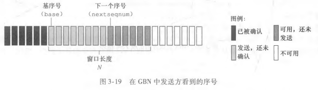
如图3-19所提示的那样，那些已被发送但还未被确认的分组的许可序号范围可以被看成是一个在序号范围内长度为N的窗口。随着协议的运行，该窗口在序号空间向前滑动。因此，N常被称为窗口长度（ window size )，GBN协议也常被称为滑动窗口协议( sliding-window protocol)。在实践中，序号空间通常看作环操作。
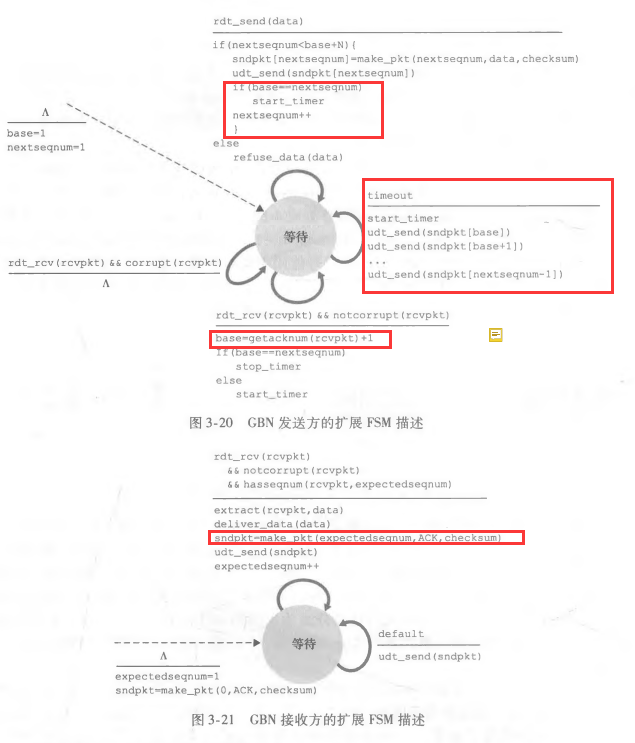
GBK发送方必须响应的三种事件
上层的调用。当上层调用rdt_send()时，发送方首先检查发送窗口是否已满，即是否有N个已发送但未被确认的分组。如果窗口未满，则产生一个分组并将其发送，并相应地更新变量。如果窗口已满，发送方只需将数据返回给上层，隐式地指示上层该窗口已满。然后上层可能会过一会儿再试。
收到一个ACK。在GBN协议中，对序号为n的分组的确认采取累积确认（ cumu-lative acknowledgment）的方式，接收到ACKn时，表明接收方已正确接收到序号小于等于n的所有分组。
超时事件。如果出现超时，发送方重传所有已发送但还未被确认过的分组。发送方仅使用一个定时器，它可被当作是最早的已发送但未被确认的分组所使用的定时器。如果收到一个ACK，但仍有已发送但未被确认的分组，则定时器被重新启动。如果没有已发送但未被确认的分组,停止该定时器。
接收方操作
在GBN 协议中，接收方丢弃所有失序分组。
接收缓存简单，不需要缓存任何不期待的分组。
当然,丢弃一个正确接收的分组的缺点是随后对该分组的重传也许会丢失或出错,因此甚至需要更多的重传。
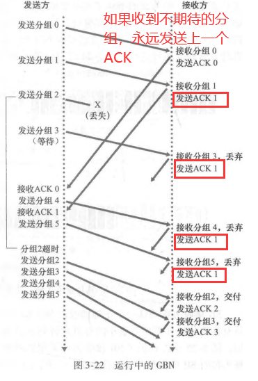
GBK优缺点
GBN协议潜在地允许发送方用多个分组“填充流水线”，因此避免了停等协议中所提到的信道利用率问题。
然而，GBN本身也有一些情况存在着性能问题。尤其是当窗口长度和带宽时延积都很大时，在流水线中会有很多分组更是如此。单个分组的差错就能够引起GBN重传大量分组，许多分组根本没有必要重传。随着信道差错率的增加,流水线可能会被这些不必要重传的分组所充斥。
选择重传概念
选择重传（SR）协议通过让发送方仅重传那些它怀疑在接收方出错（即丢失或受损）的分组而避免了不必要的重传。
这种个别的、按需的重传要求接收方逐个地确认正确接收的分组。
再次用窗口长度N来限制流水线中未完成、未被确认的分组数。然而，与GBN不同的是，发送方已经收到了对窗口中某些分组的ACK。
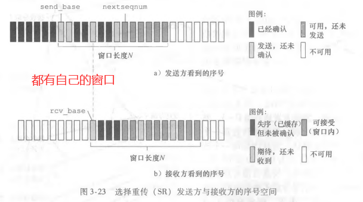
SR发送方事件和动作
SR接收方事件和动作
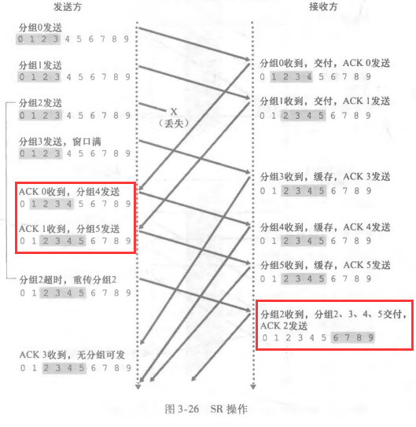
注意点
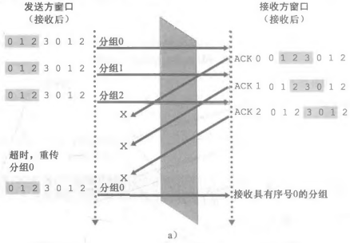
SR窗口太大，则无法区分是一个新分组还是一次重传
做法：
接收方和发送发窗口长度之和必须小于等于序号空间大小
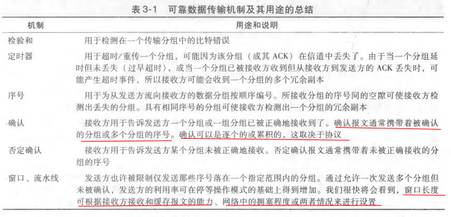
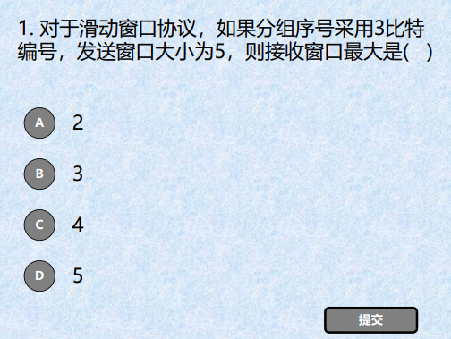
分组序号采用3比特，说明共有8个序号，接收窗口和发送窗口大小和应小于等于分许序号个数，所以选B
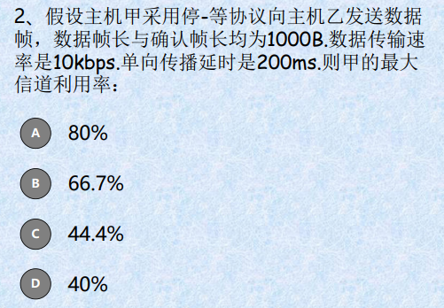
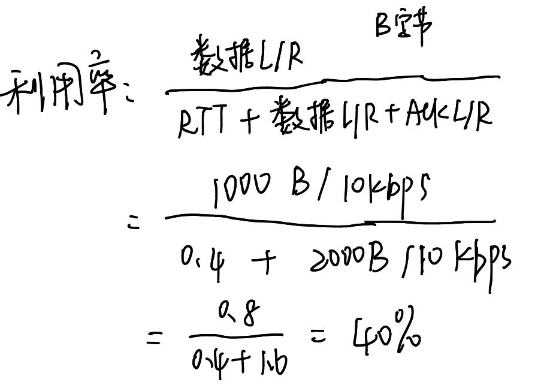
TC被称为是面向连接的 （ connection- oriented )，这是因为在一个应用进程可以开始向另一个应用进程发送数据之前，这两个进程必须先相互“握手”，即它们必须相互发送某些预备报文段，以建立确保数据传输的参数。
作为TCP连接建立的一部分，连接的双方都将初始化与TCP连接相关的许多TCP状态变量。
TCP连接也总是点对点( point- to- point)的，即在单个发送方与单个接收方之间的连接。
TCP可从缓存中取出并放入报文段中的数据数量受限于最大报文段长度（Maximum Segment Size,MSS)。MSS通常根据最初确定的由本地发送主机发送的最大链路层帧长度（即所谓的最大传输单元(（Maximum Transmission Unit，MTU))来设置。
注意到MSS是指在报文段里应用层数据的最大长度，而不是指包括首部的TCP报文段的最大长度。
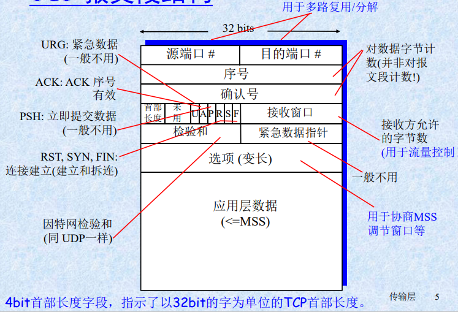
序号和确认号
TCP把数据看成一个无结构的、有序的字节流。我们从TCP对序号的使用上可以看出这一点，因为序号是建立在传送的字节流之上，而不是建立在传送的报文段的序列之上。一个报文段的序号( sequence number for a segment）因此是该报文段首字节的字节流编号。
TCP是全双工的,因此主机A在向主机B发送数据的同时，也许也接收来自主机B的数据（都是同一条TCP连接的一部分)。从主机B到达的每个报文段中都有一个序号用于从B流向A的数据。主机A填充进报文段的确认号是主机A期望从主机B收到的下一字节的序号。
事实上，一条TCP连接的双方均可随机地选择初始序号。这样做可以减少将那些仍在网络中存在的来自两台主机之间先前已终止的连接的报文段，误认为是后来这两台主机之间新建连接所产生的有效报文段的可能性（它碰巧与旧连接使用了相同的端口号)。
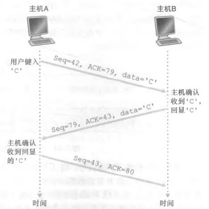
估计往返时间
样本RTT
报文段的样本RTT(表示为SampleRTT）就是从某报文段被发出（即交给IP）到对该报文段的确认被收到之间的时间量。
大多数TCP的实现仅在某个时刻做一次SampleRTT测量，而不是为每个发送的报文段测量一个Samp-leRTT。
另外，TCP决不为已被重传的报文段计算SampleRTT。
均值RTT
TCP维持一个样本RTT的均值，他的计算公式下：本质是使用加权的形式，将新出现的样本RTT计算进去，a的推荐值为0.125。
EstimatedRTT = （1 - a） • EstimatedRTT + a • SampleRTT
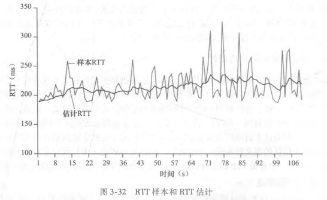
RTT偏差
用于估算样本RTT一般会偏离估计RTT的程度，b的推荐值为0.25，同样也是加权
DevRTT = （1 - b） • DevRTT + b • | SampleRTT - EstimatedRTT |
设置和管理重传超时间隔
很明显，超时间隔应该大于等于估计RTT，否则将造成不必要的重传，但也不能大很多，否则会导致报文丢失时，不能及时重传，数据传输时延大。计算公式如下：
Timeoutinterval = EstimatedRTT + 4 • DevRTT
推荐的初始超时时间为1秒；出现超时时，超时间隔加倍；收到报文，就更新估计RTT，重新计算超时时间间隔；
TCP的可靠数据传输服务确保一个进程从其接收缓存中独处的数据流是无损坏、无间隙、非冗余和按序的数据流；
TCP要处理的三大事件：从上层应用程序接收数据、定时器超时和收到ACK
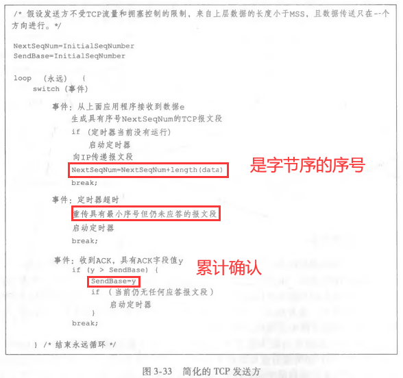
一些有趣的情况
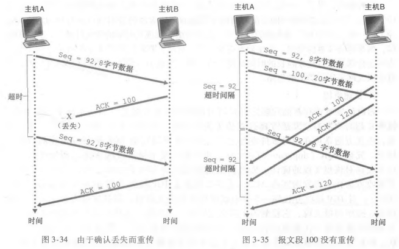
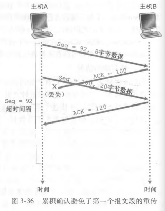
超时间隔加倍
每次TCP重传时，都会将下一次的超时间隔设置为之前值的两倍
存在问题：超时周期可能相对较长
快速重传
冗余ACK ( duplicate ACK）就是再次确认某个报文段的ACK，而发送方先前已经收到对该报文段的确认。
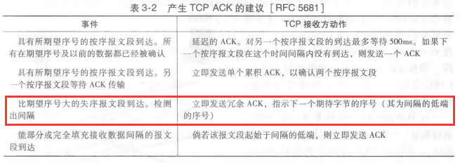
有了以上知识，就可以确定快速重传了，如果TCP接收方收到对相同数据的三个冗余ACK（加上他原来的，实际就是收到一个数据的四个ACK），就执行快速重传，在报文段的定时器过期之前，重传丢失的报文段。
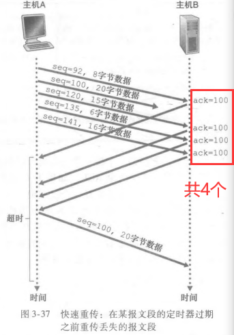
是回退N步还是选择重传
对TCP提出的一种修改意见是选择确认，它允许TCP接收方有选择地确认失序报文段,而不是累积地确认最后一个正确接收的有序报文段。当将该机制与选择重传机制结合起来使用时，TCP看起来就很像我们通常的SR协议。因此,TCP的差错恢复机制也许最好被分类为GBN协议与SR协议的混合体。
一条TCP连接的每一侧主机都为该连接设置了接收缓存。当该TCP连接收到正确、按序的字节后,它就将数据放入接收缓存。事实上，接收方应用也许要过很长时间后才去读取该数据。发送的数据就会很容易地使该连接的接收缓存溢出。
TCP为它的应用程序提供了流量控制服务（ flow- control service)以消除发送方使接收方缓存溢出的可能性。流量控制因此是一个速度匹配服务，即发送方的发送速率与接收方应用程序的读取速率相匹配。
TCP发送方也可能因为IP网络的拥塞而被遏制;这种形式的发送方的控制被称为拥塞控制 ( congestion control )。
TCP通过让发送方维护一个称为接收窗口( receive window)的变量来提供流量控制。通俗地说，接收窗口用于给发送方一个指示——该接收方还有多少可用的缓存空间。因为TCP是全双工通信，在连接两端的发送方都各自维护一个接收窗口。
有如下规则成立：
LastByteRead：主机B上的应用进程从缓存读出的数据流的最后一个字节的编号。
LastByteRcvd：从网络中到达的并且已放人主机B接收缓存中的数据流的最后一个字节的编号。
由于TCP不允许已分配的缓存溢出,下式必须成立:
LastByteRcvd - LastByteRead≤ RcvBuffer
接收窗口用rwnd表示,根据缓存可用空间的数量来设置:（是随时间动态变化的）
rwnd = RcvBuffer -[ LastByteRcvd - LastByteRead ]
因此必须要满足：发送方已发送但未被确认的数据量小于等于接收方窗口大小
LastByteSent 一 LastByteAcked <= rwnd
这个rmnd，接收方会把它放在发给发送方的报文段接收窗口字段中，这样就可以通知发送方还有多少可用空间了。
建立连接---三次握手
第一步:客户端的TCP首先向服务器端的TCP发送一个特殊的TCP报文段。该报文段中不包含应用层数据。但是在报文段的首部中的一个标志位(即SYN（同步序列编号） 比特）被置为1。因此，这个特殊报文段被称为SYN报文段。另外，客户会随机地（避免某些安全性攻击）选择一个初始序号 (client_isn)，并将此编号放置于该起始的TCP SYN报文段的序号字段中。该报文段会被封装在一个IP数据报中，并发送给服务器。
第二步:一旦包含TCP SYN 报文段的IP数据报到达服务器主机，服务器会从该数据报中提取出TCP SYN 报文段，为该TCP连接分配TCP缓存和变量，并向该客户TCP发送允许连接的报文段。(在完成三次握手的第三步之前分配这些缓存和变量，使得TCP易于受到称为SYN洪泛的拒绝服务攻击。)这个允许连接的报文段也不包含应用层数据。但是，在报文段的首部却包含3个重要的信息。首先，SYN比特被置为1。其次，该TCP报文段首部的确认号字段被置为 client _isn + 1。最后，服务器选择自己的初始序号( server_isn)，并将其放置到TCP报文段首部的序号字段中。该允许连接的报文段被称为SYNACK报文段( SYNACK segment )。
第三步:在收到SYNACK报文段后，客户也要给该连接分配缓存和变量。客户主机则向服务器发送另外一个报文段;这最后一个报文段对服务器的允许连接的报文段进行了确认（该客户通过将值server_isn +1放置到TCP报文段首部的确认字段中来完成此项工作)。因为连接已经建立了，所以该SYN比特被置为0。该三次握手的第三个阶段可以在报文段负载中携带客户到服务器的数据。
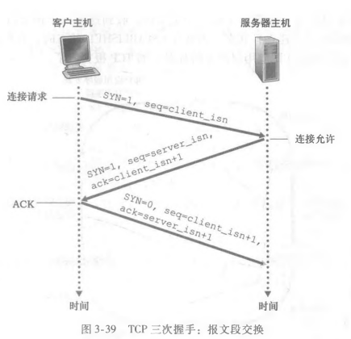
关闭连接----四次挥手
客户端发送一个首部FIN标志位的TCP报文段，服务器回复一个ACK，然后服务器发送自己的FIN报文段，客户端回复ACK，服务器接收到后，释放资源。
注意客户端需要定时关闭，这个一般为30秒，一分钟或两分钟
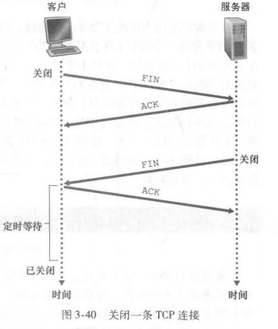
TCP状态转换图
客户端
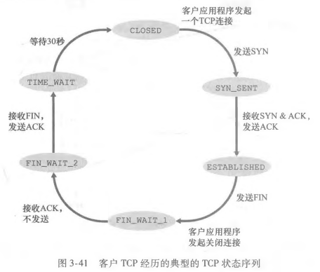
服务器端
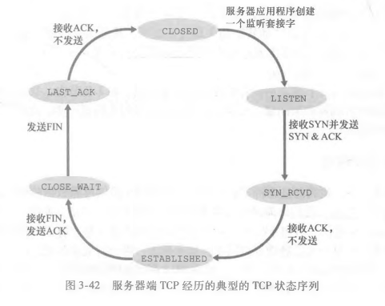
右下角如果客户端在回复ACK时携带了数据，可能也需要发送数据。